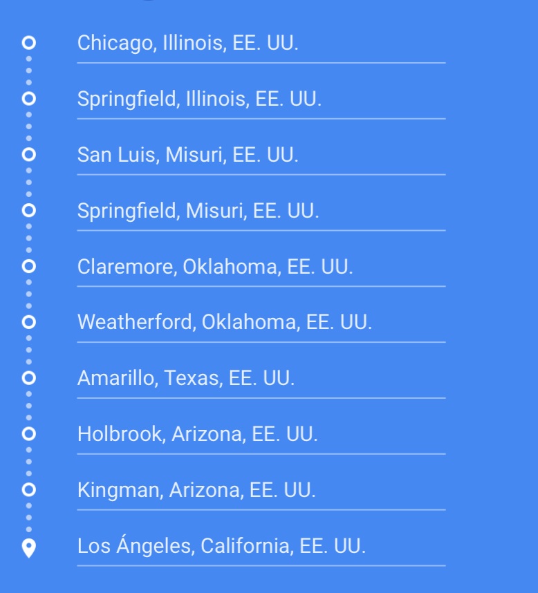
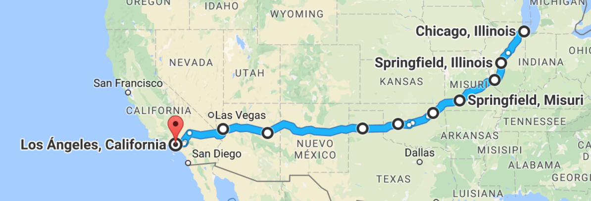

La más famosa de todas las rutas
La Ruta principal y mas famosa de Estados Unidos, con una longitud de 3.945 kilómetros, atraviesa 8 estados desde el punto de salida en Chicago hasta finalizar en Los Ángeles pasando por: Illinois, Misuri, Kansas, Oklahoma, Texas, Nuevo México, Arizona y California.
Cualquier viaje por carretera que se precie debe pasar por la calle principal de Estados Unidos, que recorre más de 3.900 km desde Chicago a Los Ángeles, cruzando el Medio Oeste, las Grandes Llanuras y el Suroeste. Construida en 1926, la famosa Ruta 66 fue la vía original que llevaba a California, la tierra prometida, como sucede en Las uvas de la ira de John Steinbeck, que llamó a la 66 la carretera madre.
Aunque la antigua US-66 ya no existe, aún se puede disfrutar del camino que recorría, todo un paseo por el corazón de la cultura norteamericana: reliquias del pasado, moteles al estilo de los 50 y cafeterías familiares muy kitsch.
Un viaje que nos lleva por la América más retro pero que también permite disfrutar de las mayores atracciones al aire libre del país: el Gran Cañón, el río Misisipi, el Painted Desert de Arizona, el Petrified Forest National Park y, al final, las playas del Pacífico de la soleada California. Hay también viejos museos, típicos restaurantes familiares.


Itinerario
Mapa
